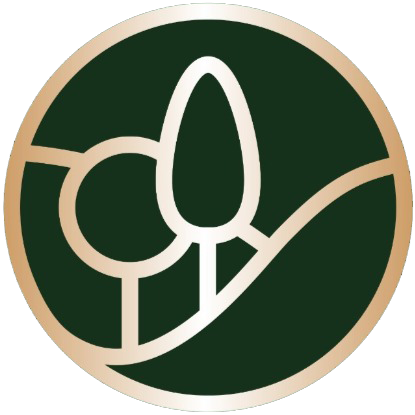

Пробная версия · названия объектов и раскладка кадров — настоящие, вместо фотографий — слоты с именами файлов · финальную подстановку делает Cowork на Mac

[ реализованные объекты ]
Проектирование, реализация и авторский надзор полного цикла. Единый стандарт качества на объектах по всей России.
[ о компании ]
Генплан, дендроплан, рабочая документация и инженерные разделы. Сад закладывается на бумаге до первого выхода техники.
Собственные бригады и техника. Рельеф, дренаж, вода, свет и посадки выполняются по единому стандарту качества.
Ведём объект от первой разметки до сдачи и сопровождаем сад в первые сезоны, когда он набирает форму.